intranet
intranet
RapidHub
Comunicados, documentos, políticas e atalhos para os sistemas da empresa em um só lugar, com acesso por perfil.
- Mural de avisos e aniversariantes
- Biblioteca de documentos com versões
- Login único com Microsoft 365
$ rapidcode --init
Microsoft 365, nuvem, infraestrutura, backup, segurança, suporte e sistemas sob medida. Um time só para cuidar da tecnologia da sua empresa.

$ rapidcode --servicos
Nove frentes que se encaixam. Contrate uma ou todas.
$ rapidcode --produtos
Ferramentas criadas pela RapidCode para o dia a dia das equipes.
intranet
Comunicados, documentos, políticas e atalhos para os sistemas da empresa em um só lugar, com acesso por perfil.
 chamados
chamados
Abertura e acompanhamento de chamados de TI com prioridade, SLA e histórico, simples para quem pede e para quem atende.
$ rapidcode --processo
Quatro etapas, sem surpresas no caminho.
Mapeamos seu ambiente, riscos e prioridades em uma conversa objetiva e sem compromisso.
Escopo, prazo e investimento claros, com opções para você decidir com segurança.
Entregas em etapas curtas, janelas combinadas e documentação ao final de cada uma.
Monitoramento, suporte e melhoria contínua com relatório mensal em linguagem de negócio.
$ rapidcode --diferenciais
SLA por criticidade em contrato, não em promessa.
Documentação, senhas e código-fonte entregues a você.
Restauração provada com tempo medido, não só configurada.
Relatórios que o gestor entende, sem jargão desnecessário.

$ rapidcode --planos-suporte
Dimensionados para o tamanho e a criticidade da sua operação.
Sob consulta
Sob consulta
Sob consulta
$ rapidcode --resultados
“Migramos para o Microsoft 365 em um fim de semana e na segunda ninguém percebeu.”— Ana P., diretora administrativa
“O primeiro teste de restauração foi o que me convenceu a contratar o backup.”— Carlos M., sócio de escritório contábil
“Os relatórios mensais finalmente falam a língua de quem decide.”— Marina S., gerente financeira
$ rapidcode --diagnostico --gratis
Em uma conversa de 30 minutos mostramos onde estão os riscos e as oportunidades. Sem custo e sem compromisso.
Pedir diagnóstico gratuito